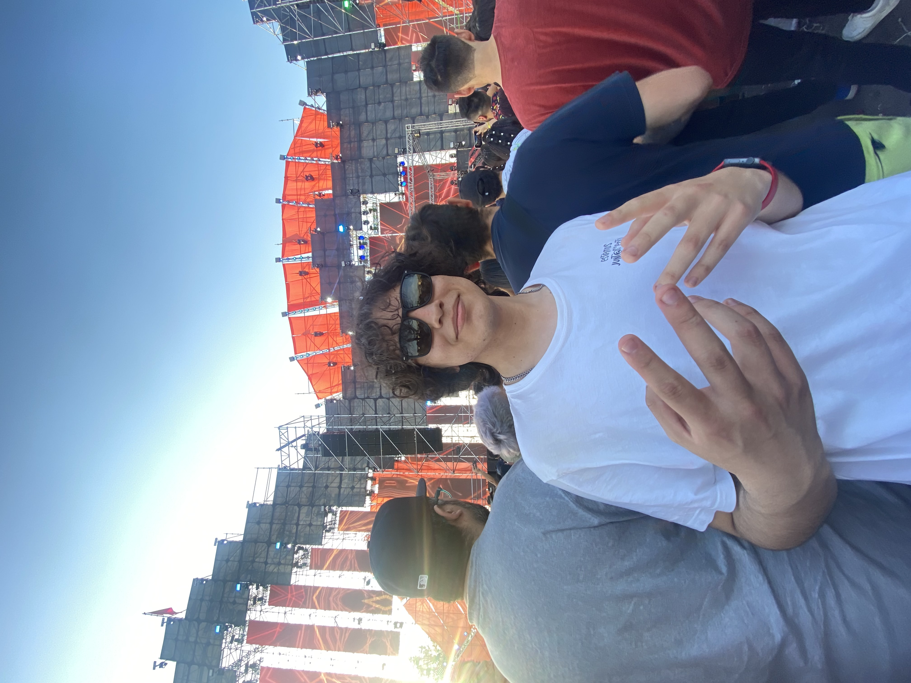
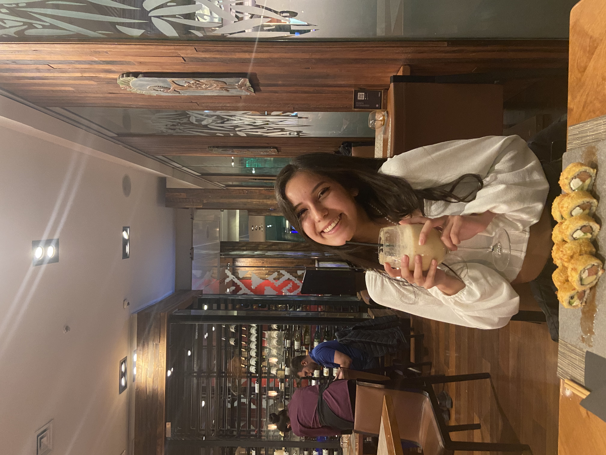

Te amo hasta la luna y de vuelta
Te amo Tabata Seguel
<3
Un loco enamorado finalmente feliz
+ La persona con la sonrisa más hermosa
= Una relación sana y hermosa

Eres mi persona favorita!
Me haces sonreir y ser la persona más feliz.
Sonrio leyendo tus mensajes y
viendo tu hermosa carita,
das vuelta todo el dia en mi cabeza y
giras en ella como un disco vinilo.
Gracias por ser tan especial en mi vida, eres una mujer maravillosa y perfecta, me encantaría
que vieras tu perefección, o te vieras de la forma que te veo yo, por que te juro que ahí
entenderás todo, el por qué estoy tan loco y enamorado de tí, el por qué sonrio al verte, el por qué
no te saco de mi cabeza, el por qué estoy pensando siemore en tí, el por qué quiero hacerte la mujer más feliz del planeta.
Seguiría explicandote el por qué de muchas cosas que generas en mi por el mero hecho de ser alguien maravillosamente perfecta, pero no hay demasiadas palabras
para explicar tu perfección, te amo demasiado mi rayito de sol.
Tu y yo
El resultado de tu y yo en esta relación es que a pesar de la distancia y las diferencias hemos sabido enterdernos y amarnos con todas nuestras fuerzas, teniendonos paciencia y amor por sobre todas las cosas, ayudando el uno al otro a superar todo tipo de obstáculos y siempre logrando sacar el mejor lado del otro, demostrando que el amor todo lo puede.